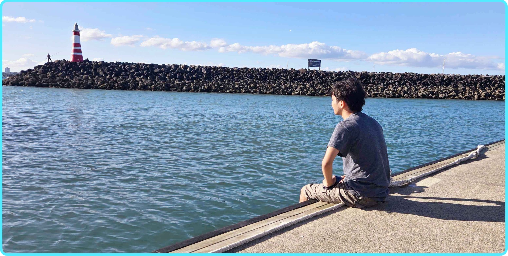

Welcome to my tiny
corner of the internet.

At the end of 8th grade when my teacher asked us to write down our future aspirations in the yearbook, I wrote that I wanted to become a software developer. While I had no idea at the time, I now know that being a developer means thinking outside the frame. It means asking the right questions, developing a critical & thoughtful process, implementing an idea with strong craft — and above all else, advocating for collaboration.
What excites me about developing/designing applications is being able to work at the crossroads of design, technology, business, & psychology. What inspires me about developing applications is being able to blend creativity with problem-solving, crafting solutions that are not only functional but also deeply intuitive and impactful.
When I'm not coding in Visual Studio Code, I'm probably chilling at home listening to music or playing games. When I'm not online, I'm probably engaging in fruitful activies and conversations, finding inspiration and motivation, inching through my bookshelf, or taking a nap.
What excites me about developing/designing applications is being able to work at the crossroads of design, technology, business, & psychology. What inspires me about developing applications is being able to blend creativity with problem-solving, crafting solutions that are not only functional but also deeply intuitive and impactful.
When I'm not coding in Visual Studio Code, I'm probably chilling at home listening to music or playing games. When I'm not online, I'm probably engaging in fruitful activies and conversations, finding inspiration and motivation, inching through my bookshelf, or taking a nap.
- Rare Drop
Have a question, some feedback, or an idea? Please, please send it my way.